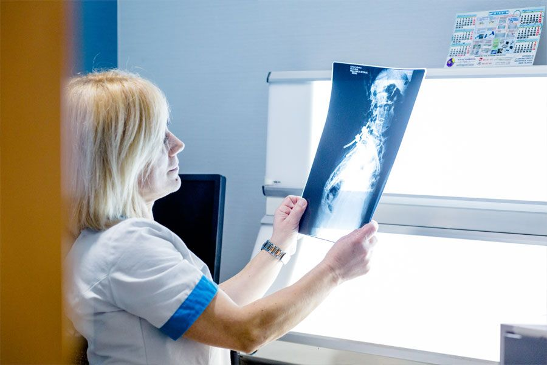

- Pruebas Covid
- Consultas
- Radiologías
- Análisis
Pruebas COVID-19
Según las indicaciones epidemiológicas de la Organización Mundial de la Salud (OMS), el diagnóstico de los afectados por coronavirus es crucial para tratar adecuadamente la enfermedad y detener la transmisión.
Por ello, y ante la necesidad vital de este servicio a la sociedad, Clínica Puig Adam pone a tu disposición un servicio de chequeo de salud especializado en relación al COVID-19.
Test serológico COVID-19
Realizamos un test inmunocromatográfico que detecta la presencia de anticuerpos IgG e IgM frente a SARS-COV-2, el virus responsable del COVID-19 o Coronavirus. Para ello empleamos el método de quimioluminiscencia con los reactivos utilizados del fabricante SNIBE Diagnostic.

Pide Cita
Proporcionamos una opción para la atención a los ciudadanos a través de la cual se le asignará una consulta telefónica para que el usuario sea atendido en el mismo día
Cita en Atención Primaria
Para citarse en Atención Primaria necesita el código de su tarjeta sanitaria, su fecha de nacimiento y el DNI o NIE. En el caso de los menores de 16 años, el DNI/NIE que deben introducir es el del adulto que se haga responsable de la cita.

La unidad de Radiología de Clínica Puig Adam es la mejor forma de llevar a cabo tus pruebas de Diagnóstico por la imagen. Nuestras consultas no requieren de largas esperas y estarás siempre atendido por un equipo médico con mucha experiencia en este campo.
La utilización de la alta tecnología en el servicio de Diagnóstico por la Imagen (radiología convencional, ecografía, tomografía computarizada), junto con un equipo de radiólogos y técnicos expertos, constituyen los pilares fundamentales para el diagnóstico y detección precoz de las enfermedades.
Laboratorio
El Laboratorio de Análisis Clínicos de la Clínica Puig Adam, viene desarrollando una labor sanitaria en la provincia de Madrid desde hace más de 60 años. Durante este tiempo, la empresa ha ido evolucionando, aumentando el personal, variando la ubicación, la denominación, su sistema de organización, su tecnología, así como su tipo y número de clientes.